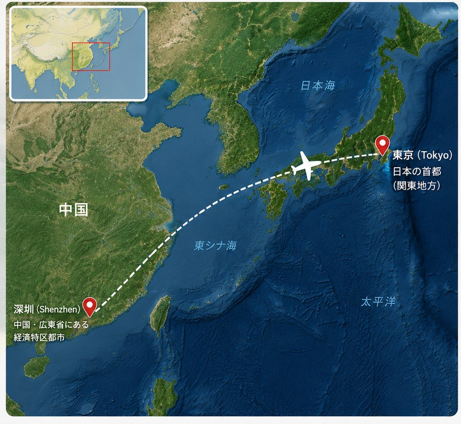

深センと聞いて、具体的なイメージが湧く方は多くないかもしれません。実はこの街、わずか40年ほど前までは人口3万人ほどの漁村でした。それが今では人口1500万人を超え、東京都(約1400万人)を上回る規模にまで成長しています。この記事では、深センがどんな街なのか、香港との関係、若者が多い理由、そして東京からの行き方まで、まとめて解説します。
香港のすぐ隣、切っても切れない関係
深センと香港は、深圳河(しんせんが)という一本の川を挟んで向き合っています。もともとは同じ「宝安県」に属する一つの地域でしたが、1898年にイギリスが新界を99年間租借した際、この川が境界線となり、二つの街に分かれました。
1997年の香港返還後、そして特に近年は、両都市の一体化が急速に進んでいます。高速鉄道や複数のイミグレーションで結ばれ、顔認証技術を使った通関もあり、地元の人たちの感覚では「深圳河を渡る」ことは、もはや「出国する」というより「隣町に出かける」感覚に近いともいわれています。経済面でも、香港は長年にわたり深センの最大の貿易相手であり続けてきました。中国政府が推進する「大湾区(グレーターベイエリア)構想」でも、深センと香港は中心的な役割を担っています。
平均年齢32歳。中国で最も「若い」大都市
深センのもう一つの際立った特徴が、住民の若さです。常住人口の平均年齢は32歳前後とされ、中国の労働人口全体の平均(38.8歳)を大きく下回ります。65歳以上の高齢者はわずか2%ほどしかいません。高齢化が進む中国の大都市の中で、深センは異例の存在です。
理由は、深センの成り立ちそのものにあります。1980年、改革開放政策のもとで中国初の経済特区に指定されたことをきっかけに、中国各地から働き口を求めて若い労働者や起業家が集まってきました。今では住民の9割近くが「外地出身」の移住者だといわれ、「深センに来たら、もう深セン人」というフレーズが、この街の開放的な気風を象徴しています。地元出身かどうかを問わず、誰にでも挑戦のチャンスがある街、というわけです。
「中国のシリコンバレー」と呼ばれる理由
深センは、ファーウェイ(華為技術・1980年代創業)、テンセント(騰訊・1990年代創業)、比亜迪(BYD)、そしてドローン大手のDJI(大疆創新・2000年代創業)など、世界的に知られる企業を次々と生み出してきました。深セン発のユニコーン企業(評価額10億ドル以上の未上場企業)は21社以上にのぼるとされ、起業家向けのシェアオフィスも市内に250か所以上あります。Googleやアップルの研究開発拠点も置かれています。
街の中心部にある電子部品市場「華強北(ホアチャンベイ)」は、世界最大級の規模を誇り、電子機器の部品からプロトタイプ制作まで、あらゆるものがここで手に入るといわれています。エンジニアやものづくりに興味がある方にとっては、一度歩いてみる価値のあるエリアです。
東京からの行き方:距離と所要時間

東京(成田・羽田)と深セン(深セン宝安国際空港)の間には、ANA・深セン航空・中国国際航空・中国南方航空などが直行便を運航しています。距離は約2,900km、飛行時間は東京発が約5時間、深セン発が約4時間20分程度と、上空の偏西風の影響で往復の所要時間が異なるのが特徴です。
深セン宝安国際空港から市街地中心部までは車で30〜40分ほど。また、深センは香港国際空港からもフェリーや陸路でアクセスできるため、香港旅行と組み合わせて訪れる方も少なくありません。
観光の見どころ
深センは工業都市というイメージを持たれがちですが、実際には海に面したリゾートエリアやテーマパークも充実しています。大梅沙・小梅沙のビーチ、世界の名所のミニチュアが集まる「世界之窓」、華僑が開発した文化エリア「OCT華僑城」などが代表的です。グルメについては、深セングルメガイドで詳しく紹介しています。
まとめ
深センは、漁村から40年でメガシティへと駆け上がった、中国でも特異な成り立ちを持つ都市です。香港との深いつながり、圧倒的な若さ、そしてテクノロジー都市としての顔——この3つを知っておくと、街の見え方が変わってくるはずです。出張でも旅行でも、単なる経由地としてではなく、街そのものを味わってみてください。
この記事の内容に古い情報や誤りを見つけた場合、あるいはご感想・ご質問がありましたら、お問い合わせまでお気軽にご連絡ください。